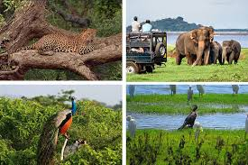
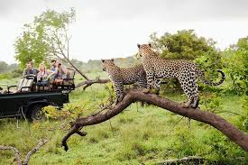
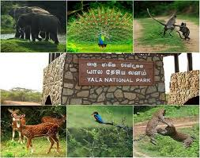

Yala National Park
 
Yala National Park is the most visited and second largest national park in Sri Lanka, bordering the Indian Ocean.
The park consists of five blocks, three of which are now open to the public.
There are also two adjoining parks, Kumana National Park or 'Yala East' and Lunugamvehera National Park.
The blocks have individual names, such as Palatupana (Block 1).
It is situated in the southeastern region of the country, in the Southern Province and Uva Province.
The park covers 979 square kilometres (378 sq mi) and is located about 300 kilometres (190 mi) from Colombo.
Yala was designated as a wildlife sanctuary in 1900, along with Wilpattu, designated in 1938, as the first two designated national parks in Sri Lanka.
The park is best known for its variety of wildlife and is important conservation of Sri Lankan elephants, Sri Lankan leopards and aquatic birds.
There are six national parks and three wildlife sanctuaries in the vicinity of Yala.
Among the largest is Lunugamvehera National Park.
The park is situated in the dry semi-arid climatic region and rain is received mainly during the northeast monsoon.
Yala hosts a variety of ecosystems ranging from moist monsoon forests to freshwater and marine wetlands.
It is one of the 70 Important Bird Areas (IBAs) in Sri Lanka.
Yala harbors 215 bird species including six endemic species of Sri Lanka.
The number of mammals that has been recorded from the park is 44, and it has one of the highest leopard densities in the world.
The area around Yala has hosted several ancient civilizations.
Two important Buddhist pilgrim sites, Sithulpahuwa and Magul Vihara, are situated within the park.
The 2004 Indian Ocean tsunami caused severe damage on the Yala National Park and 250 people died in its vicinity.
The number of visitors has been on the rise since 2009, after the security situation in the park improved.
 Location (Yala National Park)